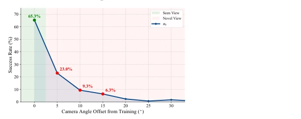
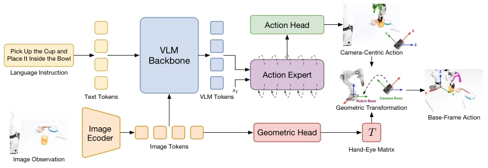
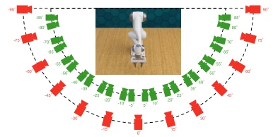
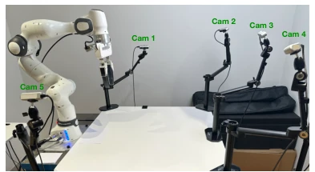
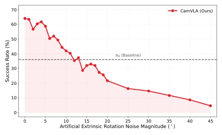
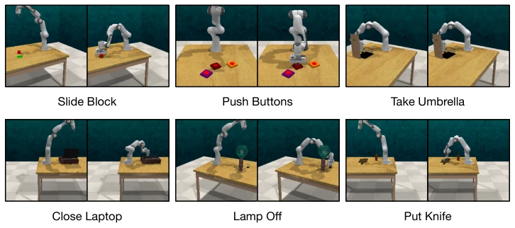
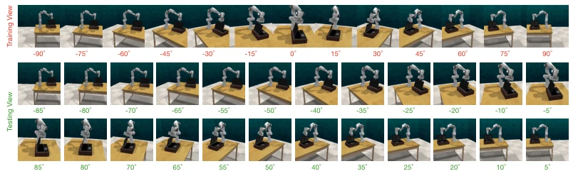
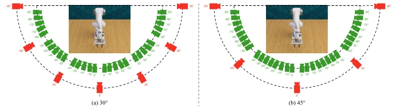
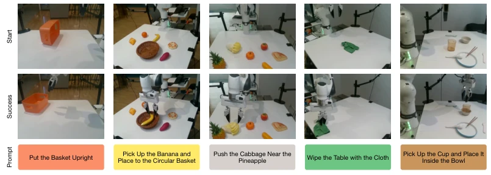
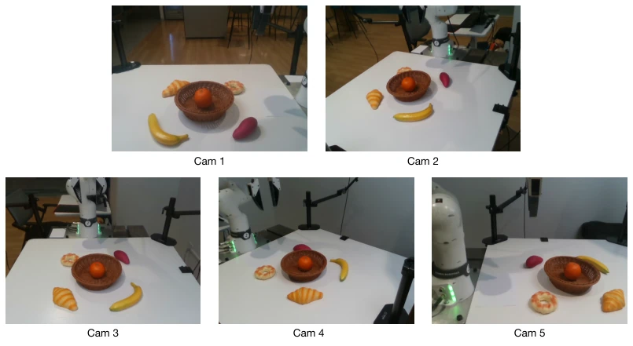

CamVLA's strategy of "self-localization" is quite interesting, liberating VLA from the shackles of "being taught where the camera is". Existing models like π0 [5] collapse when the camera deviates by just 15 degrees, a typical example of "visual blindness"; fixed viewing angles during training become useless with slight movement during deployment. The authors decouple action generation and geometric localization: one manages "how to move", the other "where to look". Theoretically, translation errors can cancel out, demonstrating skillful mathematics. However, do not celebrate too early; under extreme views, it still relies on luck, and since only monocular RGB is used, the uncertainty caused by missing depth information is not fully resolved. Although claimed to be "calibration-free", the geometric head's accuracy directly determines success or failure; if rotation estimation is off, actions will still fail. Additionally, it does not account for wrist camera disturbance, which is a potential risk in multi-camera systems. Overall, this equips VLA with a "dynamic balancer", allowing it to function despite view drift, but it has not yet reached the level of "autonomous driving", representing a commendable pragmatic attempt.
In real-world deployment, camera position drift is the norm, yet existing VLA models heavily depend on fixed views during training. As shown in Fig. 1, π0 [5] sees its success rate plummet to 6.3% after a 15° view offset, remaining ineffective even if the scene is fully visible. Although OC-VLA [8], 4D-VLA [10], etc., attempt to resolve this via known extrinsics, this is fundamentally infeasible in handheld or mobile scenarios. Existing methods assume known camera extrinsics at deployment, which is precisely the most fragile link in reality. Acquiring large-scale multi-view data is extremely costly and difficult to scale. We require a self-localization mechanism rather than relying on external calibration. This is not only about improving robustness but also a critical step for VLA to transition from the laboratory to the real world. If a robot does not even know the angle at which it is "looking", how can it execute tasks?

Figure 1: The Viewpoint Trap in VLAs. Conven- tional VLA (e.g., π0) trained on a single viewpoint exhibits extreme spatial brittleness, where a mere 15◦camera shift drops success rates to 6.3%.
CamVLA's core is a decoupling strategy. Inputting monocular RGB and language instructions, features are extracted via the VLM Backbone. The Action Head predicts end-effector actions in the camera coordinate system (∆Ac,t), while the Geometric Head regresses the 6-DoF hand-eye matrix (Tt). The key innovation lies in deterministic geometric transformation: since actions are in delta form, the translation component τt of the hand-eye matrix cancels out in relative displacement calculations, with only the rotation Rt being effective. This allows the model to focus solely on rotation estimation, reducing task difficulty. Finally, camera frame actions are converted back to the robot base frame for execution. This design avoids the geometric entanglement caused by traditional VLA forcibly coupling the visual stream with base coordinates, decoupling action generation from the viewing angle. Mathematically, ∆pb,t = Rt∆pc,t, and the translation term τt is eliminated, meaning that even if extrinsic estimation is inaccurate, as long as the rotation is accurate enough, the action can be executed.

Figure 2: Overview of the CamVLA Architecture. Our CamVLA predicts the local camera-centric action and the 6-DoF hand-eye pose in parallel, which are then combined via a deterministic geometric transformation to execute the base-frame action.
Tested on RLBench [6] simulation and Franka physical robot. Baselines include π0 [5] and GR00T N1.7 [4]. In simulation, CamVLA improved the average success rate from 33.2% to 51.4% on unseen views. In physical robot experiments, under a 15° view offset, the baseline success rate dropped to 16%, while CamVLA maintained 29.3%. For specific tasks like "Basket Upright", the baseline was 0% at 15° offset, whereas CamVLA achieved 48.3%. Ablation experiments show that training view density affects performance, but even with sparse sampling, it outperforms the baseline. Geometric head error is larger at 15°, but thanks to the relative action formulation, the impact on task success rate is controllable. The computational overhead is almost negligible (+1ms), suitable for real-time deployment.

Figure 3: Simulation camera configuration. The training set (red cameras) covers discrete view- points, while evaluation (green cameras) is con- ducted on a dense set of unseen viewpoints.

Figure 4: Real-world experimental setup. Multi- view camera configuration used to verify viewpoint robustness in physical environments.

Figure 5: Robustness under artificial extrinsic rotation noise. Success rate (%) under varying levels of random rotation noise (ranging from 0◦to 45◦) applied to the ground-truth hand-eye rotation matrix during execution.
其他图片Other Figures

Figure 6: Simulation tasks on RLBench benchmark. We evaluate CamVLA across a diverse set of manipulation tasks, requiring both high-level semantic understanding and precise low-level control.

Figure 7: Visualization of training and testing viewpoints on RLBench. The training set consists of views sampled at 15◦intervals (top row), while the testing set covers a dense range of unseen viewpoints (middle and bottom rows) to evaluate the zero-shot generalization capability of CamVLA.

Figure 8: Detailed range of camera viewpoints in simulation. (a) Training viewpoints sampled at 30◦intervals and (b) training viewpoints sampled at 45◦intervals. Red and green cameras represent training and unseen testing viewpoints, respectively.

Figure 9: Real-world evaluation tasks. Five representative manipulation tasks involving diverse objects and interaction requirements.

Figure 10: Real-world training camera viewpoints. Five third-person training placements (Cam 1–Cam 5) used for demonstration collection.